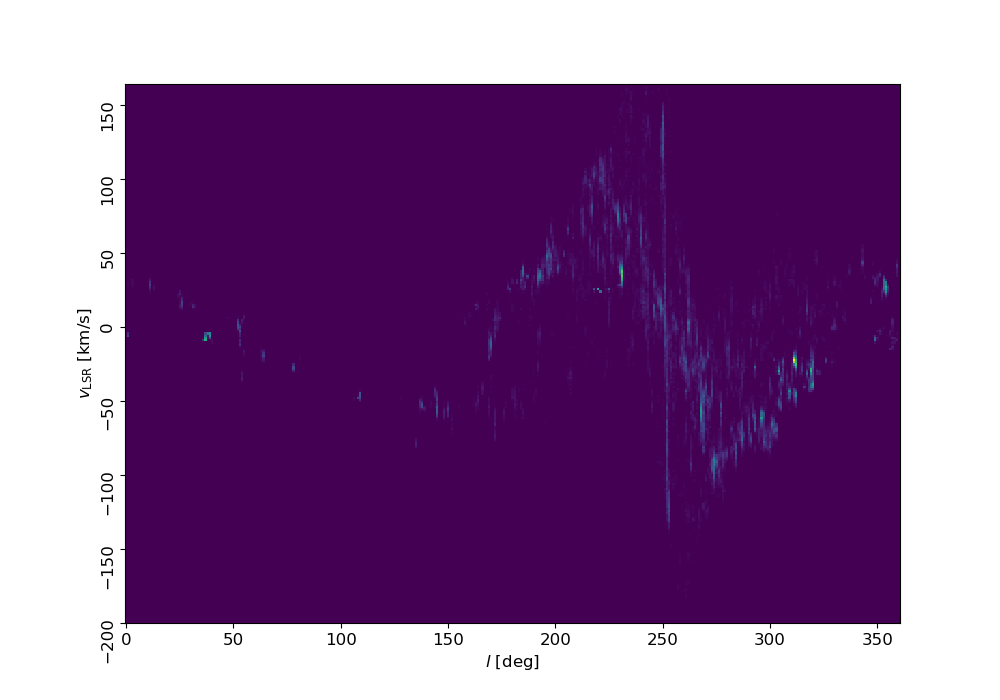

ECOGAL line emission synthetic observations
Synthetic observations of the simulations presented in Tress et al. (2025)
Neutral atomic hydrogen (HI) emission
Observer location 1
Your browser does not support the video tag.
Observer location 2
Your browser does not support the video tag.
Carbon monoxide (CO) emission
Observer location 1
Your browser does not support the video tag.
Observer location 2
Your browser does not support the video tag.
